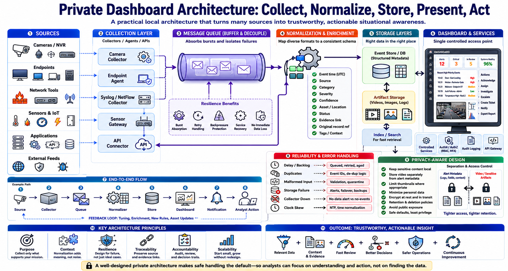

Architecture and Data Flow
Connecting to LMS... Progress: in progress

Narration
A practical private dashboard can run on a local server, workstation, or small cluster, depending on scale and availability needs. Collectors or agents receive events from cameras, endpoints, network tools, sensors, and applications. APIs support controlled integration when direct collection is not appropriate.
A message queue can buffer events and separate producers from downstream processing. This helps absorb bursts and lets services recover without immediately losing data. A database or event store retains normalized records, while larger artifacts such as video clips may use separate storage paths with tighter access and retention controls.
Event normalization maps different source formats into a consistent structure. Common fields may include event time, source, category, severity, confidence, asset, location, status, and evidence link. Preserve the original record or a reference to it so normalization does not erase details needed for investigation.
The dashboard frontend should query controlled services rather than connect directly to every source. This reduces credential sprawl and creates one place to enforce authorization, pagination, filtering, and audit logging. Service accounts and API keys should have narrow privileges and protected storage.
Design the flow from collection through review: source, collector, queue, normalizer, store, dashboard, notification, and analyst action. At each step, identify what happens during delay, duplication, malformed input, storage failure, or loss of connectivity. Event identifiers and timestamps help prevent confusion.
Privacy-aware architecture keeps sensitive content close to its legitimate purpose. Store clips separately from ordinary alert metadata, limit thumbnails where possible, minimize personal data, encrypt appropriate paths, and avoid public exposure. Architecture should make safe handling the default rather than relying on every user to remember policy.